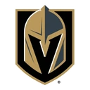

Вегас — Даллас итог матча 20 ноября
Статистика матча

ВегасДаллас- 30Броски в створ22
- 1 из 4Голы в большинстве0 из 2
- 6Штрафные минуты10
- 49 %Выигранные вбрасывания51 %
- 21Силовые приёмы19
- 15Блокированные броски10
- 3Отборы1
- 17Потери14
Удаления по минутам 8
- 2-й период
- Trey TaylorЗадержка соперника2 мин
- Nils LundkvistЗадержка клюшкой2 мин
- Nils LundkvistУдар клюшкой2 мин
- Jamie BennИгра высоко поднятой клюшкой2 мин
- 3-й период
- Radek FaksaГрубость2 мин
- Marc GatcombГрубость2 мин
- Shea TheodoreУдар клюшкой2 мин
- Brayden McNabbБлокировка2 мин
Данные лиги.
- ТурнирНХЛ
Коротко о матче
Вегас — Даллас 3:4: гости победили по буллитам.
К игре обе команды подходили с сериями: Вегас — 3 поражения подряд, Даллас — 3 победы подряд. По форме разница была заметной: в пяти последних матчах Даллас — 4 победы, Вегас — 2 победы. Слабое место — оборона: Вегас — в среднем 3,4 пропущенной шайбы за игру в этих пяти матчах.
До этого команды встречались 23 марта 2026 года: Даллас — Вегас 2:3.
Отдых и дорога
У обеих команд по 1 дню отдыха.
Вегасхозяева
- 1день отдыха
- 4матча за 7 днейвключая этот
- 5-йдомашний матч подряд
- 0км перелётпрошлый матч — на этой же арене
Прошлый матч: 18.11, Вегас — Даллас 3:4 ОТ
 Далласгости
Далласгости
- 1день отдыха
- 4матча за 7 днейвключая этот
- 2-йвыездной матч подряд
- 0км перелётпрошлый матч — на этой же арене
Прошлый матч: 18.11, Вегас — Даллас 3:4 ОТ
Перелёт — по прямой между городами прошлого и этого матча. Время отдыха считаем от начала прошлого матча.
Форма: последние матчи
Вегас 2 победы из 5
 В4:1
В4:1 В5:3
В5:3 П2:3
П2:3 П3:6
П3:6- П3:4
Даллас 4 победы из 5
 В4:3
В4:3 П3:8
П3:8- В2:0
 В2:1
В2:1- В4:3
Кто в форме
Больше всего очков (голы + передачи) в последних матчах команды.
Вегасза 5 последних матчей
| Игрок | Г | П | О |
|---|---|---|---|
| Mitch Marner | 1 | 7 | 8 |
| Victor Olofsson | 3 | 2 | 5 |
| Ivan Barbashev | 2 | 3 | 5 |
| Jack Eichel | 2 | 3 | 5 |
| Tomas Hertl | 2 | 3 | 5 |
Далласза 5 последних матчей
| Игрок | Г | П | О |
|---|---|---|---|
| Roope Hintz | 2 | 6 | 8 |
| Mikko Rantanen | 1 | 6 | 7 |
| Jason Robertson | 2 | 4 | 6 |
| Thomas Harley | 1 | 5 | 6 |
| Wyatt Johnston | 3 | 2 | 5 |
Дома и в гостях
Хозяева — в своих домашних матчах, гости — в выездных. Регулярный чемпионат этого сезона.
| Вегасдома | ||
|---|---|---|
| Матчей | 13 | 8 |
| Побед | 7 из 13 | 5 из 8 |
| Забивают за игру | 3,6 | 3,0 |
| Пропускают за игру | 3,2 | 2,0 |
| Тотал больше 5,5 | 77% | 25% |
| Доходили до овертайма | 31% | 50% |
Жирным — лучшее из двух. Овертайм — с буллитами.
Вратари
Цифры за сезон. Кто выйдет в старте, клубы обычно объявляют только перед игрой.
Вегас
| Вратарь | И | Отражено | Пропуск. | На ноль |
|---|---|---|---|---|
| Adin Hill №33 | 12 | 89,8% | 2,61 | 0 |
| Carter Hart №79 | 12 | 88,8% | 2,74 | 0 |
Даллас
| Вратарь | И | Отражено | Пропуск. | На ноль |
|---|---|---|---|---|
| Jake Oettinger №29 | 17 | 90,1% | 2,25 | 4 |
| Casey DeSmith №1 | 6 | 90,6% | 2,36 | 0 |
Отражено — доля отражённых бросков. Пропуск. — пропущено шайб в среднем за игру.
Личные встречи
 Даллас2:3Вегас
Даллас2:3Вегас- Даллас2:1Вегас
- Вегас4:5БДаллас
- Вегас3:4ОТДаллас
- Даллас4:3Вегас
- Вегас3:2Даллас
Положение в таблице
| Команда | Место | И | В | П | Голы | Очки |
|---|---|---|---|---|---|---|
| Вегас | 3 | 24 | 13 | 11 | 80:71 | 31 |
| 4 | 22 | 14 | 8 | 64:56 | 30 |
Куда дальше
Материалы носят информационный характер и не гарантируют результат. Реклама букмекеров на сайте не размещается. Сайт только для совершеннолетних (18+).